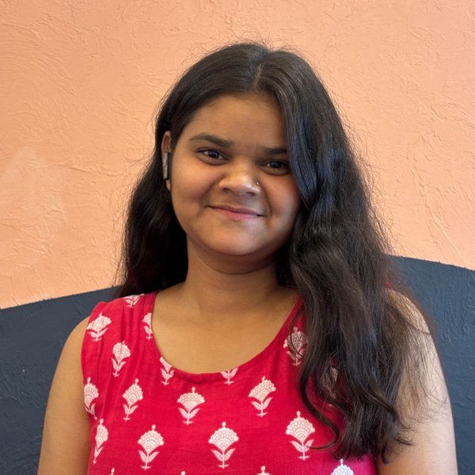

Dhanashri Nimbhorkar
Business Analyst · Functional QA · Application Support
I work on ERP, inventory, warehouse-management and IoT software — gathering requirements, writing specs and test cases, and getting production issues to root cause. 2+ years at IoTReady, Bangalore.

About
Between the business and the build
I started in technical support, handling tickets from 1500+ customer sites across India on a 1-hour SLA. That taught me what actually breaks in the field and why. As a Business Analyst I now turn that knowledge into requirements, functional specifications and test plans for inventory and warehouse workflows, and I still own production issues until they have a documented root cause.
Business analysis
Requirements elicitation, functional specs, user stories and acceptance criteria, gap analysis, UAT coordination.
Functional QA
Test-case design, functional and regression testing, defect logging with reproducible steps, fix verification.
Application support
L1/L2 troubleshooting, root-cause analysis, escalation handling, SLA-driven ticket management, support documentation.
Experience
IoTReady, Bangalore
Junior Business Analyst
ERP, inventory and warehouse-management (WMS) products
- Gathered and documented business and functional requirements for inventory and WMS workflows across customer deployments; produced functional specifications adopted by the development team.
- Translated business needs into user stories and acceptance criteria, clarifying expected behaviour with developers, QA and business stakeholders.
- Analysed stock-movement and ERP processes to validate business rules and identify gaps before development.
- Prepared and executed functional, regression and user-acceptance tests for each release; logged defects in GitHub Issues with reproducible steps and verified fixes.
- Investigated production issues from both the business and technical side, delivering root-cause notes that reduced repeat incidents.
Technical Support Associate
IoT hardware, software and ERP solutions
- Provided L1/L2 support across 1500+ customer sites throughout India, resolving 30+ tickets a month within a 1-hour SLA.
- Troubleshot hardware, firmware, software and device-integration issues remotely; supported installation, configuration and firmware-upgrade cycles.
- Owned incidents and escalations end to end; performed root-cause analysis on recurring issues and coordinated corrective actions with engineering.
- Authored troubleshooting guides and technical documents that standardised issue resolution and reduced escalations.
Skills
What I work with
Business analysis
QA and testing
Support
Domain
Technical
Tools
Education & certifications
Background
- B.Sc. Computer Science — Sant Gadge Baba Amravati University
- Advanced Diploma in Software Programming — Navgurukul
- Learning Jira — Simplilearn
- Python and JavaScript — CodeChef
- Generative AI — LinkedIn Learning
At Navgurukul I also served as Discipline Coordinator and English Coordinator, running peer sessions and day-to-day campus coordination.
Contact
Get in touch
Open to Business Analyst, Functional QA and Application Support roles in Bangalore or remote.